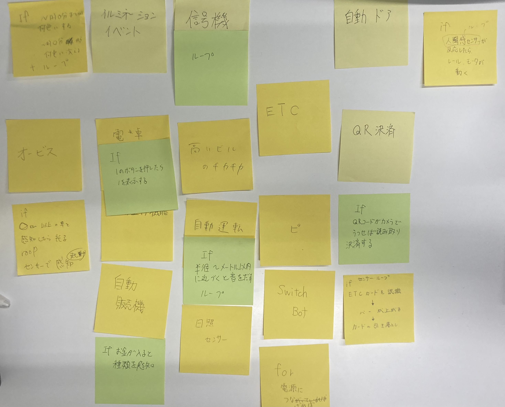
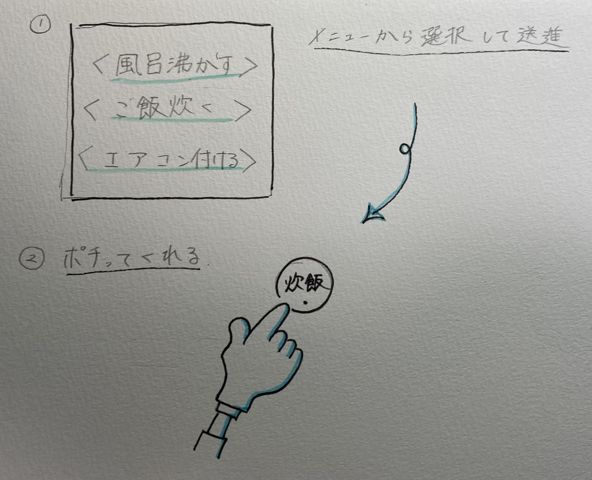

課題１
1.プログラミングで動かされているものは？
今回班の中で、「プログラミングで動かされているもの」として以下のものが上がりました。

「自動運転」や学生証をかざす「ピ」「信号機」「ETC」など様々上がりました。
私が「プログラミングで動かされているもの」としてあげるのは、自動ドアです。
2.プログラミング的な手順
自動ドアのプログラミングの手順は以下のようになっているのではないかと考えました。
≪IF≫
・1:人感センサーが人を感知
・2:ドアを一定時間開く
・3:一定時間経過したら、ドアを閉める
≪ROOP≫
人感センサーの起動
3.こんなのがあったら・・・

私は、スマホで「炊事」「風呂」「エアコン」等をつけるよう指示したら、家の中でボタンを押してくれるマシーンがあったらいいのではないかと考えました。
プログラム的な手順としては
≪ROOP≫→スマホアプリと機会の通信
≪IF≫→アプリで指示:指示された機器に取り付けられた機械がボタンを押す→押したら離す
といった内容でできるのではないかと考えます。